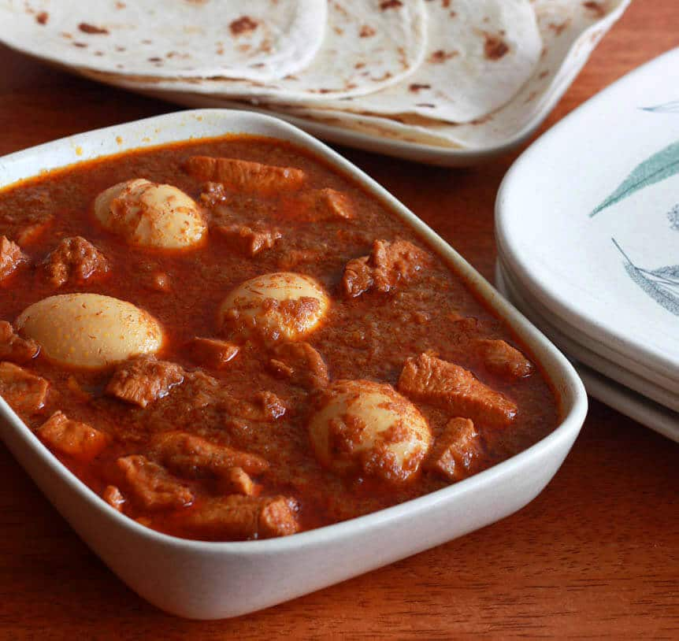

doro wat

Doro Wat is one of the most famous of all African dishes.
You will find it in every Ethiopian restaurant and virtually
anyone who is familiar with African cuisine will have
heard of it.
Traditionally Doro Wat is served with an Ethiopian flatbread
called injera. Its kind of a spongy pancake made with teff
flour (a grain indigenous to the area), and the batter is left
to ferment for up to 4 days before its used. The injera is used
in place of an eating utensil and is used to scoop up the chicken
stew.